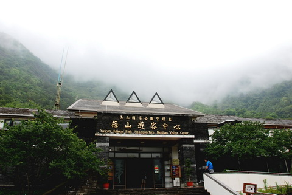
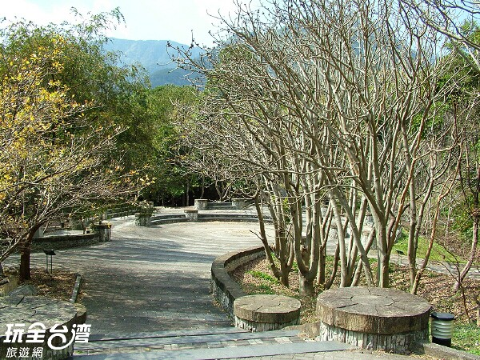
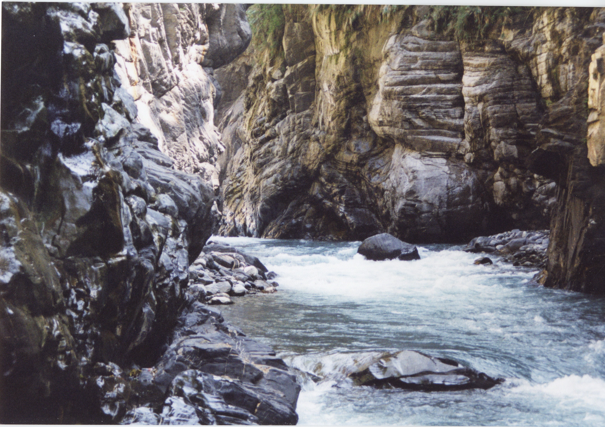
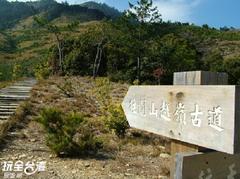
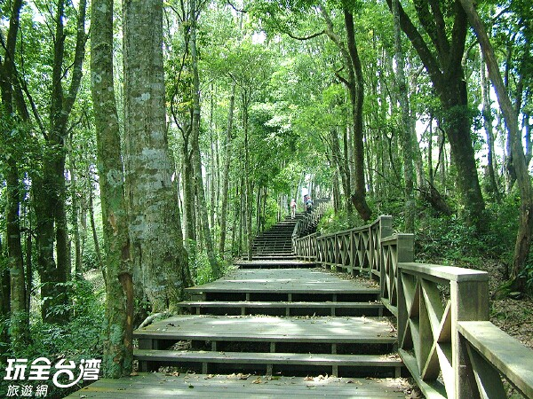

|  |
南橫梅山遊憩區無高雄市桃源區 梅山遊憩區位於南橫公路西段荖濃溪東岸的山腰，為南橫公路進入玉山國家公園之門戶，規劃以梅山口地區為中心，提供遊客餐飲、休憩與解說服務，原為一布農族的部落。南橫貫通以後，梅山山莊在此設立，當地遂逐漸發展成橫貫路上的補給驛站，山水風光也漸為外人發掘。 |
布農文化展示館無高雄市桃源區梅山山莊內 位於桃源區梅山遊客中心旁的布農族文物展示館，由玉山國家公園設置管理，館內蒐羅了大量的布農族文物及展示布農族傳統生命禮俗、編織服務、建築交通、工技文化等單元，就是要讓遊客能更深入瞭解布農族文化特色與習俗。 |
|
|  |
梅山原生種植物園無高雄市桃源區 為了能夠長期的對台灣原生種植物進行研究與培育，政府特別在玉山國家公園梅山遊客中心對面設置「梅山原生種植物園」園區內種植台灣原生種植物29科47種，讓遊客來到這裡認識台灣原生植物，並設立解說牌，讓遊客對生態保育之重要有更深的認知。 |
|  |
梅山溫泉無高雄市桃源區 梅山溫泉位於高雄市桃源鄉梅山村，而梅山村乃是南橫公路梅山口站北方谷地２公里處，身居叢山峻嶺之中，溪水潺潺而流，是一個寧靜、秀麗的小山村。 |

|
梅蘭布農藝術村無高雄市桃源區 梅蘭布農藝術村位於桃源區樟山村內，梅蘭布農藝術村是典型的布農族部落，充滿著濃厚的原鄉原味，這裡的住屋、建築都妝點上傳統的布農族圖騰，路旁也經常可見到布農族人姿意揮灑的藝術創作。 |
|  |
關山越嶺道無高雄市桃源區 關山越嶺道位於玉山國家公園南側，古道自高雄縣桃源區的桃源登山口，至台東縣關山登山口，全長約170公里。 |
|  |
藤枝森林遊樂區無高雄市桃源區 位於高雄市桃源區的藤枝森林遊樂區，為林務局屏東林區管理處管轄，其面積751公頃，海拔高度約介於500公尺至1,804公尺之間，氣候涼爽，由於園區全程皆已舖上柏油路，因此不用辦理入山證即可入園，藤枝森林遊樂區原始闊葉林403公頃，人工林348公頃，並規劃多條森林步道，非常適合現代人來趟森林浴之旅。 |